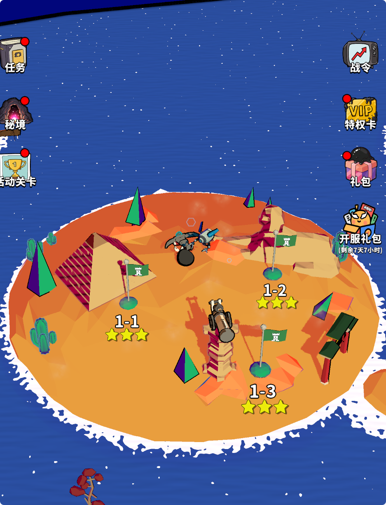

🎨 独立游戏美术突围：低成本、高统一性的资源策略¶
1. 🧠 核心哲学：一致性 > 精细度 (Consistency > Fidelity)¶
对于独立团队，最大的陷阱是追求写实。 * 🕳️ 写实是无底洞: 3A 游戏的写实依赖于数亿面数的扫描资产、动作捕捉和光线追踪。独立团队做写实，只会得到“廉价的写实” (Uncanny Valley)。 * 🏰 风格化是护城河: 像素、低多边形 (Low Poly)、卡通渲染 (Cel Shading) 不仅成本低，而且更容易建立独特的视觉识别度 (Visual Identity)。
🏆 黄金法则¶
"一个统一的丑陋世界，胜过一个拼凑的精美世界。" 玩家可以接受简陋的画面，但不能接受风格割裂 (例如：像素角色站在写实草地上)。
2. 📦 资产获取与重组 (Asset Acquisition & Kitbashing)¶
2.1 🛒 商店资产的正确用法¶
直接使用 Asset Store 的模型会被称为 "Asset Flip"。正确的做法是 Kitbashing (模型拼装)。 * 🔨 拆解: 买一套“中世纪村庄”包，不要直接用它的房子。拆出它的墙壁、窗户、木桶。 * 🧱 重组: 用这些基础零件拼出你自己的建筑。 * 🎨 去材质: 丢弃原资产自带的贴图（通常风格各异）。只保留模型网格 (Mesh)。
2.2 ⬜ 灰盒先行 (Greyboxing)¶
- 在没有任何美术资源的情况下，用简单的立方体和胶囊体搭建关卡。
- 验证玩法循环。如果方块打架都好玩，加上美术只会更好玩。
3. 🧪 技术美术作为粘合剂 (Tech Art as Glue)¶
如何让来自 5 个不同商店的资产看起来像是一个游戏？统一的渲染管线。
3.1 🖌️ 统一着色器 (Master Shader)¶
- 创建一个通用的 Master Shader (例如基于 Toon Shading)。
- 🔄 强制替换: 将所有外部资产的材质球替换为你的 Master Shader。
- 🎨 色彩校正: 通过 Shader 的参数（如 Tint Color, Rim Light）将所有模型的色调统一到你的调色板中。
3.2 🎞️ 屏幕后处理 (Post-Processing)¶
- 🖼️ LUT (Look Up Table): 最廉价的风格化手段。一张 LUT 图可以瞬间改变整个画面的色调（冷峻、温暖、复古）。
- ✏️ 描边 (Outline): 加上黑色描边可以有效掩盖模型精度的不足，增强卡通感。
- 🌫️ 雾效 (Fog): 统一场景的深度感，遮挡远处的低精度细节。
4. 🤖 AI 与程序化生成 (AI & Procedural Tools)¶
4.1 🎨 AI 辅助概念设计¶
- 使用 Midjourney / Stable Diffusion 生成大量的概念图、UI 图标、技能特效参考。
- ⚠️ 注意: 目前 AI 直接生成的 3D 模型尚不可用，但用于生成无缝贴图 (Seamless Textures) 非常高效。
4.2 🎲 程序化生成 (WFC / PCG)¶
- 利用 Wave Function Collapse (WFC) 算法，用少量的地块 (Tiles) 生成无限的地图。
- 这极大降低了关卡美术的工作量。
5. 📚 案例参考¶
- 🌲 Valheim: 低分辨率贴图 + 高质量光照。
- 🌧️ Risk of Rain 2: 极简的几何体 + 强烈的色彩对比。
- 🧛 Vampire Survivors: 极其廉价的像素素材 + 疯狂的特效堆叠（爽感掩盖了粗糙）。
6. ⚠️ 美术出图资源的坑点与经验 (Pitfalls & Best Practices)¶
很多独立开发者在购买或自制美术资源导入 Unity 时，会遇到各种“水土不服”的问题。以下是血泪总结：
6.1 📐 坐标轴与单位 (Axes & Units)¶
- 🔄 Y-Up vs Z-Up: Blender 默认是 Z-Up，Unity 是 Y-Up。
- 💣 坑点: 导入的模型是躺着的 (-90度旋转)。
- ✅ 解法: 在 Blender 导出 FBX 时，设置
Apply Transform并选择Y Forward, Z Up(视具体版本而定，关键是确保导入 Unity 后 Rotation 为 0,0,0 且正面朝前)。
- 📏 单位比例 (Scale):
- 💣 坑点: 导入的模型是巨型或微型的 (Scale = 100 或 0.01)。这会导致物理模拟、光照烘焙全部出错。
- ✅ 解法: 始终以 1 Unit = 1 Meter 为标准。在建模软件中应用所有缩放 (Apply Scale/Freeze Transformations) 后再导出。
6.2 🎯 轴心点 (Pivot Point)¶
- 💣 坑点: 模型的轴心点在几何中心，而不是底部中心。
- 💥 后果: 放置在地面时，模型的一半会埋在土里。
- ✅ 解法: 对于放置在地面的物体（树、石头、建筑），轴心点必须在 底部中心 (Bottom Center)。对于门轴，轴心点必须在 合页处。
6.3 🖼️ 材质与贴图 (Materials & Textures)¶
- 📏 贴图尺寸: 必须是 2 的幂次方 (Power of 2) (e.g., 512, 1024, 2048)。
- 💡 原因: 显卡只能压缩 POT 贴图。非 POT 贴图无法压缩，显存占用会暴增 4 倍以上。
- 🏷️ 材质命名: 严禁使用默认名 (如
Material.001,Lambert1)。- 💥 后果: 当导入多个模型时，Unity 会自动合并同名材质，导致你的石头变成了树的颜色。
- ✅ 解法: 命名必须带前缀，如
M_Rock_01,M_Tree_Birch。
6.4 🧹 模型清理 (Mesh Cleanup)¶
- 🗑️ 多余数据: 很多商店资产带有相机、灯光、甚至骨骼节点。
- ✅ 解法: 导出前删除所有非 Mesh 物体。
- 🌑 法线问题 (Normals):
- 💣 坑点: 模型表面出现奇怪的黑斑或接缝。
- ✅ 解法: 检查法线方向 (Face Orientation)。确保所有面朝外。对于硬表面物体，注意设置平滑组 (Smoothing Groups) 或标记 Sharp Edges。
6.5 🧱 碰撞体 (Colliders)¶
- 💣 坑点: 直接使用高面数的渲染模型作为 MeshCollider。
- 💥 后果: 物理计算极其昂贵，且容易产生穿模 BUG。
- ✅ 解法:
- 简单物体：使用 Box/Sphere/Capsule Collider。
- 复杂物体：在建模软件中制作一个极简的低模 (UCX_Name)，作为专用碰撞体导入。
7. 🖌️ 3D 渲染工作流详解 (Rendering Workflows)¶
选择正确的渲染管线决定了你的美术成本上限。
7.1 🕯️ PBR (Physically Based Rendering) - 物理渲染¶
- 原理: 模拟真实光线与材质的交互。核心是 Albedo (固有色) + Metallic (金属度) + Roughness (粗糙度) + Normal (法线)。
- 👍 优点: 真实，通用性强（Unity/Unreal 标准材质）。
- 👎 缺点: 极其昂贵。
- 💸 制作成本: 每个模型都需要展 UV、画贴图、烘焙法线。
- 📉 性能成本: 纹理采样次数多，显存占用大。
- 🛑 结论: 独立团队慎用。除非你买现成的 PBR 资产包且不打算修改。
7.2 🔺 Low Poly (Flat Shading) - 低多边形¶
- 原理: 不使用平滑组 (Smoothing Groups)，让每个面都棱角分明。通常只使用顶点色 (Vertex Color) 或一张极小的调色板贴图 (Palette Texture)。
- 👍 优点:
- 🚀 制作快: 甚至不需要展 UV。
- ⚡ 性能高: 几乎没有纹理开销。
- 👎 缺点: 容易显得“廉价”或“千篇一律”。
- ✅ 结论: 首选。但必须配合优秀的光照和后处理（见下文）。
7.3 🔮 MatCap (Material Capture) - 材质捕获¶
- 原理: “作弊”的渲染方式。将光照、高光、反射全部“画”在一张小球贴图上。无论模型怎么转，它都反射这张图。
- 👍 优点: 极致性能（不需要计算光照），极致风格化（想要什么风格就画什么球）。
- 👎 缺点: 无法响应场景灯光（比如走进暗室不会变黑）。
- ✅ 结论: 适合固定视角的上帝视角游戏，或特殊的魔法物品/UI 3D 物体。
7.4 📺 Toon / Cel Shading - 卡通渲染¶
- 原理: 将连续的光照离散化（从渐变变成色阶）。通常配合描边 (Outline)。
- 👍 优点: 二次元风格，讨喜，且能掩盖模型精度的不足。
- 👎 缺点: 需要编写或购买专用 Shader，对拓扑结构有一定要求。
- ✅ 结论: 如果你想做“塞尔达”或“原神”风格，这是必经之路。
8. 👨💻 程序员的美术救生圈 (Programmer's Guide to Style)¶
如果你是“色弱”或者“手残”的程序员，如何做出好看的画面？
8.1 🎨 调色板理论 (Palette Theory)¶
- 🚫 禁忌: 永远不要在 Color Picker 里选颜色！
- ❌ 错误: 想要红色就选 (255, 0, 0)。
- 💥 后果: 画面极其刺眼，像开发者测试图。
- ✅ 解法: 去 Lospec 或 Coolors 下载一套现成的调色板 (Palette)。
- 🔒 强制约束: 你的游戏里所有颜色，只能从这 8 个或 16 个颜色里选。
- ✨ 效果: 无论你怎么乱搭，画面看起来都是统一和谐的。
8.2 💡 灯光是化妆师 (Lighting)¶
一个白模，打好光就是艺术品；一个精模，打平光就是垃圾。 * 🕯️ 三点布光法 (Three-Point Lighting): 1. ☀️ 主光 (Key Light): 最亮，决定阴影方向（暖色，如淡黄）。 2. ☁️ 补光 (Fill Light): 照亮阴影区，防止死黑（冷色，如淡蓝）。 3. 🔦 轮廓光 (Rim Light): 从背后打光，勾勒物体轮廓，将物体与背景分离（高亮）。 * 🌌 环境光 (Ambient): 不要用纯黑。用深蓝色或深紫色作为阴影色。
8.3 🎞️ 后处理是滤镜 (Post-Processing)¶
这是“让画面变贵”的最后一步。Unity Post-Processing Stack 是免费的。 1. 🎬 Color Grading (ACES): 开启 ACES Tone Mapping，画面对比度瞬间电影感。 2. ✨ Bloom (辉光): 给发光物体（火焰、魔法、UI）加上光晕。慎用，阈值调高，强度调低。 3. 🌑 Ambient Occlusion (AO): 增加物体接触面的阴影，增加体积感。
📝 总结: Low Poly 模型 + 严格调色板 + 三点布光 + ACES/Bloom = 看起来很贵的独立游戏。
9. 📱 实战：移动端 Toony Colors Pro 2 (TCP2) 黄金配置¶
如何在手机上跑出 60 帧的同时，达到“看起来像主机游戏”的效果？ 核心思路: Fake it till you make it (假装直到成真)。用廉价的贴图计算代替昂贵的光照计算。
9.1 💡 灯光配置 (Lighting Setup)¶
手机上严禁使用多盏实时灯光。
* ☀️ Realtime Lights: 1 盏 Directional Light (作为主光 Key Light)。
* 🌑 Shadows: Hard Shadows (软阴影太贵，且风格化游戏硬阴影更好看)。
* ☁️ Fill Light (补光): 不要用灯！ 使用 Environment Lighting (全局环境光)。
* 📍 设置位置: 菜单栏 Window -> Rendering -> Lighting -> Environment 选项卡。
* ⚙️ 模式: Source = Gradient (梯度光/三色光)。
* 🌅 Sky Color: 暖色 (对应天空，影响物体顶部)。
* ⚖️ Equator Color: 中性色 (对应地平线，影响物体中部)。
* ⛰️ Ground Color: 冷色 (对应地面反射，影响物体底部)。
* 💡 原理: TCP2 Shader 会自动读取这些颜色作为 Ambient Light 叠加到物体上。
* 🔦 Rim Light (轮廓光): 不要用灯！ 使用 Shader 里的 Fresnel Rim。
9.2 ⚙️ Shader 黄金配置 (TCP2 Generator)¶
在 TCP2 Shader Generator 中，勾选以下选项：
- 🌈 Ramp Style (核心):
Texture Ramp(滑块图)。- 原理: 用一张 256x1 的渐变图来定义光照过渡。
- 技巧: 在暗部区域画一点点暖色（模拟次表面散射 SSS），会让皮肤看起来通透。
- ✨ Specular (高光):
Off(关掉！)。- 替代方案: 使用 MatCap。
- 🔮 MatCap (材质捕获):
Add(叠加模式)。- 用途: 模拟金属反射、丝绸光泽。
- 🚀 性能: 极快。比 PBR 的 Reflection Probe 快 10 倍。
- 用法: 只有金属部件的材质开启此项。
- 🔦 Rim Light (边缘光):
Fresnel。- 用途: 模拟背光，将角色从背景中剥离。
- 设置: 颜色设为高亮色，Power 设为 3~5。
9.3 🎞️ 后处理 (Post-Processing) - 极简版¶
手机上后处理是性能杀手，只能留最关键的。
- 🎨 Color Grading (LUT): 必开。
- 🚀 性能: 几乎无消耗 (一张 2D 贴图查找)。
- 作用: 决定整个游戏的色调（冷暖、电影感）。
- ✨ Bloom (辉光): 慎开。
- 设置: 必须开启
Fast Mode。Diffusion 降低。 - 阈值: Threshold > 1.0，只让极亮的部分（特效、UI）发光。
- 设置: 必须开启
- 📐 Anti-aliasing (抗锯齿):
FXAA(最便宜) 或Off(如果分辨率够高)。- 🚫 禁忌: 严禁在手机上开 MSAA (多重采样)，显存带宽会爆炸。
9.4 📊 性能总结¶
- Draw Calls: 使用 GPU Instancing (TCP2 支持)。
- Overdraw: 减少半透明特效的面积。
- 顶点数: Low Poly 风格天然优势。
📝 最终公式: 1 盏灯 + 环境光渐变 + Ramp 贴图 + MatCap 金属 + LUT 调色 = 伪 3A 级移动端画面。
10. 🔬 技术美术原理深挖 (Tech Art Deep Dive)¶
知其然，更要知其所以然。以下是上述配置背后的图形学原理。
10.1 🌈 Texture Ramp (渐变图)¶
- 原理:
- 传统光照 (Lambert) 计算的是
NdotL(法线与光照方向的点积)，结果是 0 (黑) 到 1 (白) 的线性灰度。 - Ramp 则是把这个 0~1 的灰度值作为 UV 坐标的 U 值，去采样一张渐变图。
- 📐 公式:
FinalColor = tex2D(RampTexture, float2(NdotL, 0.5))。
- 传统光照 (Lambert) 计算的是
- 如何选择:
- 🔪 硬边缘 (Hard Edge): 色块分明，适合塞尔达/日式二次元风格。
- ☁️ 软边缘 (Soft Edge): 像迪士尼/TF2，有平滑的明暗交界线。
- 🎨 色相偏移 (Hue Shift): 最关键点。暗部不要只是变黑，要变冷（蓝/紫）；亮部变暖（黄/橙）。这比单纯的明暗更有“高级感”。
10.2 🔮 MatCap (材质捕获)¶
- 原理:
- 全称 Material Capture。它不计算光照，而是将视图空间法线 (View Space Normal) 映射到 UV 坐标上。
- 想象一个完美的球体，它包含了你想要的光照和反射。无论你的模型怎么转，它都去采样这个球体上对应法线方向的颜色。
- 为什么能替代高光?
- 如果 MatCap 贴图上画了一个高光点，那么模型上所有朝向摄像机的面都会采样到这个高光点，看起来就像产生了镜面反射。
- 👍 优势: 真正的 Specular 计算需要
pow(dot(N, H), power)，而 MatCap 只是简单的纹理采样，极快。
- 怎么做 MatCap 贴图?
- 方法 A (3D 软件): 在 Blender 里建一个球，打上复杂的光，渲染出一张正方形图片。
- 方法 B (PS 手绘): 在 PS 里画一个圆，涂上你想要的金属质感和高光。
10.3 🔦 Rim Light vs Outline¶
- Rim Light (边缘光):
- 原理: Fresnel (菲涅尔) 效应。计算视线与法线的夹角。夹角越接近 90 度（边缘），值越大。
- 作用: 内发光。模拟背光照在物体绒毛或边缘产生的透光感。主要用于将物体与背景分离。
- ✏️ Outline (描边):
- 原理: 通常使用 Inverted Hull (法线外扩) 技术。把模型复制一份，沿法线向外膨胀一点点，剔除正面 (Cull Front)，只显示背面，涂成黑色。
- 作用: 外轮廓。漫画感的核心。
- ⚖️ 区别: Rim 是光影效果（在模型内），Outline 是几何效果（在模型外）。
10.4 🖼️ LUT (Look Up Table)¶
- 原理:
- LUT 是一张颜色映射表。输入一个颜色 (R, G, B)，把它当作坐标 (X, Y, Z)，去表里查出一个新的颜色。
- 它本质上是一个 3D 纹理 (256x16 或 32x32x32)，为了方便存储，被平铺成了一张 2D 长条图 (Strip)。
- 如何制作:
- 在 Unity 运行游戏，📷 截图。
- 放入 Photoshop。
- 使用 PS 的调整图层 (曲线、色阶、色彩平衡) 把截图调成你想要的样子。
- 🔑 关键步: 把一张标准的 "Neutral LUT" (原色表) 放入 PS，应用完全相同的调整图层。
- 导出这张修改后的 LUT 图。
- URP 设置:
Global Volume->Add Override->Color Lookup。- Mode 选
Neutral(如果不换 LUT) 或External(如果使用自制 LUT)。
10.5 🔺 Low Poly 顶点数之谜¶
- ❓ Q: 为什么 Low Poly 看起来面少，顶点数反而多？
- 💡 A: 因为硬边 (Hard Edges) 需要裂开顶点。
- Smooth Shading (平滑): 一个立方体的 8 个顶点，每个顶点只有一个法线 (平均值)。相邻面共用顶点。
- Flat Shading (硬边): 为了让立方体的棱角分明，每个面必须有自己独立的法线。因此，一个角上的顶点必须分裂成 3 个（分别属于 Top, Front, Right 面）。
- 🔢 结果: 一个平滑立方体有 8 个顶点；一个 Low Poly 立方体有 4 * 6 = 24 个顶点。
- 🚀 性能影响: 虽然顶点多了 3 倍，但因为不用计算复杂的 PBR 和光照，整体性能依然是吊打高模的。
11. 💻 程序员专用：TCP2 调参协议 (The TCP2 Tuning Protocol)¶
美感不是玄学，是参数的特定组合。我们将“好看”翻译成代码逻辑和约束条件。
11.1 🚫 assert(false) - 绝对禁止 (Strict Constraints)¶
如果违反以下规则，画面必崩。
- 💡
Light.Count > 1(Realtime):- 🧠 逻辑: 多光源会导致阴影杂乱 (Shadow Acne) 且破坏二次元的纯净感。
- ⚠️ 异常: 画面变脏，性能 O(N) 下降。
- 🎨
Color.sRGB == (255, 0, 0)(纯色):- 🧠 逻辑: 物理世界不存在饱和度 100% 的颜色。
- ⚠️ 异常: 刺眼，像 Debug 模式。
- ✅ 修正:
Clamp(Saturation, 0, 0.85).
- 🌑
Shadows.Type == Soft(软阴影):- 🧠 逻辑: 风格化需要明确的明暗边界 (Hard Edge)。软阴影会让画面看起来像“渲染未完成”。
- ✨
Material.Specular == true(高光):- 🧠 逻辑: 传统的高光计算 (Phong) 会产生一个白点，看起来像塑料。
- ✅ 修正: 使用
MatCap代替。
11.2 ✅ require(true) - 必须执行 (Core Logic)¶
这是“好看”的最小集 (Minimum Viable Aesthetics)。
- 🌈
Ramp.Texture != null:- 🧠 逻辑: 拒绝线性光照。必须通过查表 (LUT) 来控制光照衰减。
- ⚙️ 参数: 使用
256x1的水平渐变图。
- 🔦
Rim.Fresnel > 0:- 🧠 逻辑: 确保
Silhouette(剪影) 与Background(背景) 有对比度。 - ⚙️ 参数:
Power = 3.0,Color = BaseColor * 1.5.
- 🧠 逻辑: 确保
- 🖼️
PostProcessing.LUT.Active == true:- 🧠 逻辑: 全局颜色矩阵变换。这是统一所有资产色调的唯一低成本方案。
11.3 🔀 optional() - 可选参数 (Parameters)¶
根据对象类型 (Type) 决定是否开启。
- ✏️
Outline:if (Object.Type == Character): Enable. (强调角色)if (Object.Type == Environment): Disable. (环境要后退，不要抢戏)
- 🔮
MatCap:if (Material.Type == Metal || Silk): Enable. (模拟高反射)if (Material.Type == Cloth || Skin): Disable. (漫反射为主)
11.4 🧮 美感的算法化翻译 (Translating Aesthetics to Logic)¶
如何把美术总监嘴里的“通透”、“空气感”翻译成代码？
- 💎 "通透感" (Translucency) ->
Hue Shift:- 📐 算法: 暗部的颜色不要只是
BaseColor * 0.5(变黑)。 - 📝 公式:
ShadowColor = HSV(BaseColor.H - 15°, BaseColor.S + 0.2, BaseColor.V * 0.6). - 💡 解释: 暗部要偏冷 (色相偏移) 且更饱和 (次表面散射模拟)。
- 📐 算法: 暗部的颜色不要只是
- 🌫️ "空气感" (Atmosphere) ->
Fog Match:- 📐 算法:
Fog.Color == Skybox.BottomColor. - 💡 解释: 远处的物体必须融入天空的颜色，减少对比度。
- 📐 算法:
- 🎩 "高级感" (Premium Feel) ->
ACES Tone Mapping:- 📐 算法:
FinalColor = ACES(LinearColor). - 💡 解释: 增加对比度，压暗部，提亮部，去除灰蒙蒙的感觉。
- 📐 算法:
11.5 🛑 FAQ: 就算是风格化，也不能动 Highlight/Shadow Color 吗？¶
Q: 既然是风格化 (Stylized)，我为了艺术效果，手动把阴影调成紫色不行吗？
A: 可以，但代价很高。请遵循以下“三层级”操作规范：
🟢 Level 1: 坚决不动 (The Systemic Way) - 推荐¶
- 操作:
Highlight = White,Shadow = Grey/Black(保持默认)。 - 控制权: 交给 环境光 (Environment Lighting)。
- 🧠 逻辑:
- 你的物体处于一个“世界”中。如果世界是黄昏，环境光是紫色，那么所有物体的阴影自然就是紫色。
- 如果你手动把物体阴影锁死为紫色，当场景切换到“正午”时，这个物体就会像个格格不入的 Bug。
🟡 Level 2: 用贴图动 (The Ramp Way) - 进阶¶
- 操作: 依然保持
Shadow = Grey，但是 画一张带颜色的 Ramp 图。 - 控制权: 交给 Ramp Texture。
- 🧠 逻辑:
- 如果你想要“皮肤的阴影偏红 (SSS)”或者“金属的阴影偏冷”：
- 不要直接改颜色属性。
- 要画一张 Ramp 图：在 Ramp 的暗部（左侧）画上你想要的红色或冷蓝色。
- ✨ 优势: Ramp 是对光照反应的映射。当光照变强时，它会滑向亮部；变弱时滑向暗部。它是动态的，而
ShadowColor是死的。
🔴 Level 3: 只有这时候才动 (The Exception)¶
- 操作: 手动修改
ShadowColor。 - 适用情况:
- UI 3D 物体: 永远处于固定光照下，不受环境影响。
- 魔法/特效: 比如一个自发光的幽灵，它的阴影必须是绿色的，无论在什么环境下。
- 完全 2D 化的渲染: 你根本不想要任何光照计算，只想画成什么样就显示什么样 (Unlit)。
📝 总结: * 想改整体氛围？改 Environment Light。 * 想改材质质感（如皮肤通透感）？改 Ramp Texture。 * 只有做 UI 或 特效 时，才去动 Shadow Color。
12. 🖼️ 案例分析：一张图看懂 TCP2 协议 (Case Study)¶
我们用刚才定义的“程序员协议”来分析这张参考图：

12.1 ✅ 做对了什么 (Compliance)¶
-
💡 单光源 + 硬阴影 (Light & Shadow)
- 观察: 大炮和树木的阴影边缘非常锐利 (Hard Edge)，且方向一致。
- 协议: 符合
Light.Count == 1和Shadows.Type == Hard。 - 效果: 画面干净利落，没有脏乎乎的软阴影过渡。
-
🌈 阴影色相偏移 (Hue Shift)
- 观察: 重点看地面。地面的亮部是橙色，但阴影部不是黑色或灰色，而是深红褐色。
- 协议: 符合
Ramp.Texture的使用。暗部发生了色相偏移 (Orange -> Red)，而不是单纯的亮度降低 (Orange -> Dark Orange)。这让沙地看起来很“透气”。
-
✏️ 选择性描边 (Selective Outline)
- 观察:
- 树木/石头: 没有描边。
- 大炮/角色: 有明显的黑色轮廓（或者是深色贴图边缘）。
- 协议: 符合
if (Object.Type == Environment) Disable Outline。如果那堆仙人掌也有黑描边，画面就会乱成一团线稿。
- 观察:
12.2 🌊 特殊 Shader 技术 (Tech Art)¶
-
水体泡沫 (Depth Fade)
- 岸边的白色波浪线不是手画的贴图，而是 Depth Fade 技术。
- 原理: Shader 计算
水面深度和地形深度的差值。如果差值很小（水很浅），就显示白色。
-
顶点色 (Vertex Colors)
- 注意那些圆锥体的树。它们没有复杂的纹理，很可能是直接给顶点涂了颜色（一面绿，一面紫），或者用了一张极小的 Palette 贴图。
12.3 🧠 总结¶
这张图是典型的 "Low Poly + Ramp Shading" 组合。它没有使用昂贵的 PBR，也没有乱打光。它的美感来自于： 1. 高饱和度的互补色 (橙色沙地 vs 蓝色海洋)。 2. 干净的阴影 (硬阴影 + 色相偏移)。 3. 克制的细节 (环境无描边，只强调主体)。
12.4 🔧 还可以优化的地方 (Areas for Improvement)¶
虽然这张图已经达到了及格线，但作为《Vampirefall》的参考，我们还可以更进一步：
-
🔦 缺少轮廓光 (Missing Rim Light)
- 问题: 角色和塔在橙色背景下虽然有轮廓线，但缺乏“体积感”。
- 优化: 给角色材质开启 Fresnel Rim (边缘光)。
- 预期效果: 角色边缘会有一层淡淡的亮光，像被阳光照亮一样，能更强烈地从背景中“跳”出来。
-
🏜️ 地面过于单调 (Flat Ground)
- 问题: 大面积的橙色色块虽然风格化，但显得有点“空”。
- 优化:
- 方案 A (低成本): 在 Ramp 贴图的亮部增加一点点噪点 (Noise)，模拟沙粒感。
- 方案 B (中成本): 使用 Decals (贴花) 技术，在地面随机撒一些小石子或裂缝的贴图。
-
🌫️ 缺乏大气透视 (No Fog)
- 问题: 远处的岛屿边缘和近处一样清晰，缺乏深度感。
- 优化: 开启 Unity 的 Fog，颜色设为海水的深蓝色。
- 预期效果: 远处的物体会微微融入背景，增加场景的层次感 (Depth)。
-
🌵 颜色调和 (Color Harmony)
- 问题: 绿色的仙人掌/旗帜在橙色背景上显得有点“生硬”（红绿对比过于强烈）。
- 优化: 将绿色的色相稍微向青色 (Cyan) 或 黄色 (Yellow) 偏移，避免使用纯正的 RGB 绿色。这会让画面看起来更高级。
13. 🛍️ 商店资产生存指南：混合工作流 (Mixed Asset Workflow)¶
Q: 我买的资产有些是画好贴图的 (Textured)，有些是只用色板的 (Palette/Vertex Color)，它们能混用吗？
A: 可以，但必须通过“Shader 统一化”来强制融合。
13.1 两种流派的区别 (The Difference)¶
| 特性 | 🎨 贴图流 (Textured) | 🌈 色板流 (Palette / Synty) |
|---|---|---|
| 原理 | 每个模型有独立的 UV 和一张专属贴图 (e.g., Sword_Albedo.png)。 |
所有模型共用一张 256x256 的色块图。UV 缩成一个点，放在对应颜色上。 |
| 优势 | 细节丰富，可以画纹理、污渍、手绘光影。 | 极其省内存 (1张贴图管全家)，Draw Call 容易合并。 |
| 劣势 | 内存占用大，风格差异大 (不同画师画风不同)。 | 细节缺失，看起来像“塑料积木”。 |
13.2 🚫 绝对禁止 (Must Not)¶
- 禁止使用原作者的 Shader: 商店资产通常自带 Standard Shader 或自定义 Shader。全部丢弃！
- 禁止混用光照模型: 不要让 A 资产受 PBR 光照影响，而 B 资产只受 Unlit 影响。这会产生严重的“拼凑感”。
13.3 ✅ 统一工作流 (The Unification Pipeline)¶
我们要用 TCP2 Master Shader 作为“熔炉”，把它们熔铸成同一种风格。
步骤 1: 材质球统一 (Material Standardization)¶
所有资产，无论来源，必须换成 Project Vampirefall 标准材质球。
* Shader: 选择 Toony Colors Pro 2/Hybrid Shader (或你生成的 Mobile Shader)。
步骤 2: 贴图处理 (Texture Handling)¶
- 对于贴图流资产:
- 将
Albedo贴图放入 Shader 的Main Texture槽位。 - 关键: 如果贴图自带了强烈的手绘光影（比如画死的阴影），需要用 PS 减淡，或者在 Shader 里调高
Ramp Threshold来冲淡它。
- 将
- 对于色板流资产:
- 将
Palette贴图放入 Shader 的Main Texture槽位。 - 关键: 设置贴图的
Filter Mode为 Point (No Filter)。否则颜色边缘会模糊串色。
- 将
步骤 3: 光照签名 (The Lighting Signature)¶
这是让它们看起来像“同一个游戏”的核心魔法。必须在两个材质球上开启完全相同的以下设置：
- Ramp Texture (光照衰减): 两个材质球使用同一张 Ramp 图。
- 效果: 无论是精细的贴图模型，还是简单的色块模型，它们的阴影颜色和衰减方式将完全一致。
- Rim Light (边缘光): 开启相同的 Fresnel Rim。
- 效果: 它们都会被同样的“阳光”勾勒出轮廓。
- Outline (描边): (可选) 统一开启或关闭。
- 注意: 色板流模型的法线通常很硬 (Hard Normals)，描边可能会断裂。如果必须描边，可能需要用 Blender 重新平滑法线 (Smooth Normals by Angle)。
13.4 💡 进阶技巧：色板重映射 (Palette Remapping)¶
如果你觉得 Synty 的色板颜色太饱和（太卡通），与你的手绘贴图不搭： * 不要去改模型 UV。
13.5 🛠️ 自动化工具：批量法线平滑 (Batch Normal Smoothing for Outlines)¶
Q: 为了描边不断裂，我需要把所有 Low Poly 模型的法线都平滑吗？
A: 千万别直接平滑模型法线！那会毁了你的 Low Poly 风格！
核心矛盾 (The Conflict)¶
- 光照 (Lighting) 需要 硬法线 (Hard Normals)：这样才能看到棱角分明的面。
- 描边 (Outline) 需要 软法线 (Smooth Normals)：这样描边才会连续，不会在棱角处断开。
解决方案：双法线流 (The Dual-Normal Workflow)¶
我们保持模型的原始法线不变（用于光照），但计算一套平滑法线烘焙到数据通道 (UV3, UV4 或 Vertex Color) 中，专门给 Shader 画描边用。
✅ TCP2 官方工具 (The Built-in Way)¶
Toony Colors Pro 2 自带了一个工具：Window > Toony Colors Pro 2 > Smoothed Normals Utility。
1. 选中你的所有模型（Project 窗口中）。
2. 打开工具，选择 Vertex Colors (最通用) 或 UV⅔/4。
3. 点击 Apply to Selection。
4. 在 Shader 中，找到 Outline 设置，勾选 Use Smoothed Normals 并指定对应的通道。
⚡ 程序员的批量自动化 (The Programmer's Way)¶
如果你有 1000 个资产，不想手动点工具，可以写一个 AssetPostprocessor 脚本，在导入模型时自动处理。
// 放在 Editor 文件夹下
using UnityEngine;
using UnityEditor;
using System.Collections.Generic;
public class SmoothNormalBaker : AssetPostprocessor
{
// 命名包含 "_Outline" 的模型会自动触发
void OnPostprocessModel(GameObject g)
{
if (!assetPath.Contains("_Outline")) return;
foreach (var meshFilter in g.GetComponentsInChildren<MeshFilter>())
{
var mesh = meshFilter.sharedMesh;
// 1. 计算平滑法线
var smoothNormals = CalculateSmoothNormals(mesh);
// 2. 写入 UV3 (或者 Colors)
mesh.SetUVs(2, smoothNormals);
// 3. 上传 Mesh 数据
mesh.UploadMeshData(false);
}
}
// 简单的平均法线算法 (示意)
List<Vector3> CalculateSmoothNormals(Mesh mesh)
{
// ... (这里通常使用 TCP2 的 API: TCP2_SmoothedNormalsUtility.GetSmoothedNormals(mesh))
return new List<Vector3>();
}
}
💡 总结: * 不要在 Blender 里把模型平滑了导出来。 * 要使用工具把平滑法线存到侧面的通道里。 * 这样你既拥有 Low Poly 的硬朗光影，又拥有丝滑不断的描边。